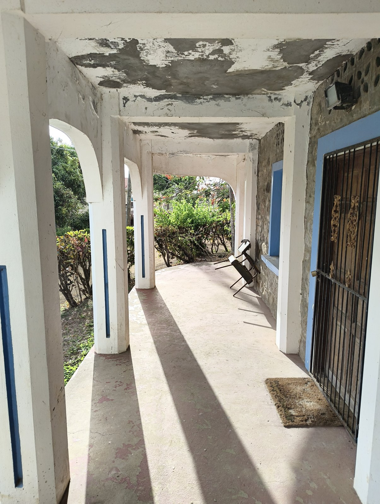
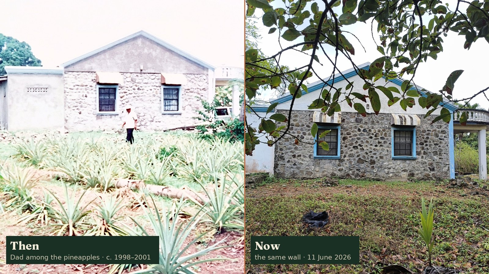
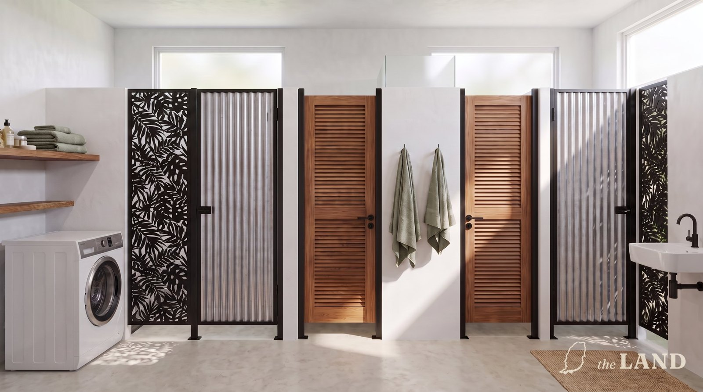
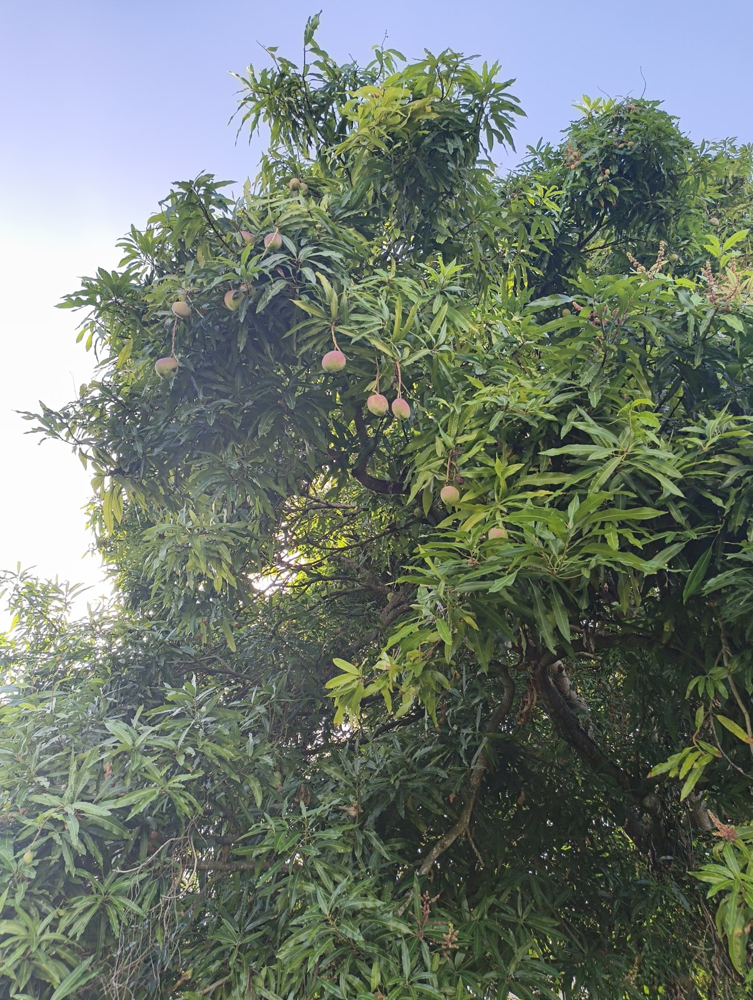

The House at Simon · a prospectus for the family · October 2026
Bringing Mum and Dad's house back, together
Mum and Dad built it from stone that was already on the land, salvaged from the old water mill and the Georgian houses at the heart of the village. The walls are half a metre thick. The hurricane hit midway through the build and they carried on anyway. It is standing empty now, and the damp, the cracks and the weather are winning.

This sets out everything: what the work is, what it costs line by line, how sure each number is, how your money comes back, and what I carry myself. It is not a finished deal. It's a proposal for us to talk through and shape together, and the questions at the end are real ones.
In one minute
What the house money buys
- A sound roof and structure, with the damp and cracks dealt with, checked by an engineer
- A full rewire, new plumbing and a new septic system
- A proper bathroom for two parties at once: two showers, two WCs, two basins
- A new kitchen, and skylights to bring light in behind the stone walls
- The back of the house opened to the land with a five-metre hurricane-rated glass opening
- A deck and a shading pergola, so the house steps out into the garden
- Solar on the roof: no electricity bill
- Furnished and ready to use: the existing furniture restored, new white goods and beds
The whole house, complete, costs £95,500 to £114,075. Section 2 has every line.
I've moved away from asking for one payment with nothing back. A shared stake, with most of it returned from what the house itself earns, is fairer to everyone, and it means the house carries its own weight rather than resting on goodwill.
Who can take part
- Firstly, the seven of us: me, my three brothers and three sisters. If we're all willing and able to put in the same amount, that would be neat. But as I know too well, life isn't neat, and the rising cost of living is real. So this is an offer, not another bill. Where someone looks after one of us's finances, as one of our nieces does for her mum, they take part on that person's behalf.
- Then Mum and Dad, and the next generation, if they're interested and able, with no expectation on anyone. They'd contribute on payback terms we agree together. My suggestion: they get all of it back, half repaid before our £7,000 and the rest after. If the build or the first seasons are slower than we hope, that could take six or seven years. The house won't borrow more than £49,000 in total, even if more is offered. Our £7,000 each that comes back already adds up to that, so money from Mum, Dad or the next generation would take the place of some of ours, for example where one of us can only put in less. It wouldn't add to what the house owes.
1The house and the work
The house is sound in its bones and failing everywhere else. Left as it is, the realistic end is a sale. The work brings it back to a house people can actually live in and enjoy:




- Roof, damp and cracks dealt with properly, with a structural engineer's view before anything is closed up.
- A full rewire, new plumbing and a new septic system.
- One proper bathroom laid out for two parties at once: two showers, two WCs each in its own cubicle, two basins, with instant water heaters.
- A new kitchen, and skylights to get light into rooms behind a half-metre stone wall.
- The back of the house opened to the land: a five-metre hurricane-rated glass opening, so living and dining move to where you can see out.
- A deck that levels the house into the garden, and a pergola shading the two sides with no verandah.
- Solar on the roof, installed by a Grenadian supplier: a house with no electricity bill.
- Furnished: the beds, wardrobes, sofas and tables already there are kept and restored. New white goods, mattresses, TVs, blinds, and a fold-down bed so the studio doubles as a bedroom.


The ideal timetable is orders placed in November, and building from February 2027, with LID Constructions, a Grenadian contractor whose quote we already hold. February is the start of the dry season, and a ten-to-fourteen-week build finishes by May, before the hurricane season. The timetable matters to me, but some of it is outside our control: shipping and fuel costs are moving with world events, and the weather sets the building season.
The timetable
Aiming for a trial in June and opening for the carnival season, July and August, with Spicemas on 9 and 10 August 2027.
| When | What happens |
|---|---|
| October | We talk it through. LID's revised quote, freight quotes, and the Tourism Authority's view come in. |
| Early November | We agree, and start setting up the two companies, which depends on my citizenship application (see section 4). |
| November | Orders placed, builder's contract signed, planning applications in. |
| Mid January | Goods leave China, before Chinese New Year closes the factories in February. |
| February | Building starts: roof, structure, rewire, plumbing. Goods arrive and fit-out begins. |
| May | Building finished; inspections and licences. |
| June | Trial: family and friends stay first, and we test the kitchen and the lets. |
| July–August | Open for the carnival season. |
The date that matters most is goods leaving China by mid January. If they miss it, everything slips by about two months and the carnival opening is at risk. That's why the November dates matter, but if we need longer to agree, the build moves.
2What it costs, line by line
Every figure here comes from a full item-by-item costing finished this month: each part priced against Grenada, China and the region, and matched to a real quote wherever one exists. Costs are shown as a range because not everything is quoted yet. The low end assumes things land where the evidence points; the high end allows for them not to.
| What | Low | High |
|---|---|---|
| The house rescuedRoof, structure, rewire, plumbing, septic, bathroom, kitchen, skylights, furnishing, professional fees and permits, plus a 15% contingency on the works. | £69,768 | £86,543 |
| SolarInstalled quote from Mr Smith (Go Solar, Grand Anse): 12 panels, inverter and two batteries. | £8,256 | £8,256 |
| The back openingBeam, columns and a five-metre hurricane-rated slider. | £7,700 | £7,700 |
| House deck, 59 m²Composite boards on an aluminium frame and steel screw piers. | £4,484 | £4,484 |
| Wrap pergolaGalvanised steel, shade only. | £2,100 | £3,900 |
| Pool deck, 42 m²Same system as the house deck. The pool itself is part of my business, not the house budget, so this can wait. | £3,192 | £3,192 |
| The house, complete | £95,500 | £114,075 |
| What we'd raise between us | £98,000 | £98,000 |
| Difference | £2,500 to spare | £16,075 short |
How sure are these numbers?
At the low end there's £2,500 to spare. At the high end we're £16,075 short. I'm not going to hide that or promise I'll absorb it: the business side is already over my own budget (see section 5).
Three things should narrow it before anyone pays a penny. LID is requoting against the reduced scope. The pool deck can wait for a pool. And we've asked the Grenada Industrial Development Corporation for relief on import duty. How we handle whatever is left is question 2, and it's a decision for all of us.
3How the money comes back
The house earns its own way back. For around twenty weeks a year it's let as one whole house, to one party: typically two couples travelling together. It's never let room by room, so no guest shares it with a stranger. When it's let, I move out into one of the guest suites in the mango grove. The rest of the year it's the family's.
Everything the house earns goes into a house account, separate from the business, and visible to all seven of us. So does the rent the business pays the house from its third year, as a share of its turnover. Out of that account, £7,000 each comes back to us before the house's money goes on anything else. If Mum, Dad or the next generation have lent money, half of theirs comes back first, as above.
After we're repaid: an improvements and upgrades fund
Once everyone is repaid, everything the house earns goes into an improvements and upgrades fund. It isn't for upkeep, which stays with me while I'm there. It's for making the house and the land ready for what the family will need next:
- Care as we get older: adapting the house so any of us can live there, or be looked after there, later in life.
- The next generation: making it a place our children and grandchildren can use, stay in and look after in their turn.
- Bursaries for local young people, for education and training, so the house gives something back to Simon.
- New technology as it arrives, from better solar and storage to getting around without a driver. Yes, robot cars.
Everyone with a stake in the house forms an investment committee, the seven of us, to decide what the fund spends, and when. No one, me included, decides alone. How the committee works is a question for around 2032, when the fund starts, and we'll settle it then.
| Repaid by the end of each year of opening | Yr 1 | Yr 2 | Yr 3 | Yr 4 | Yr 5 |
|---|---|---|---|---|---|
| Expected: let 20 weeks a yearPaid off early in year 5. | £6.8k | £17.0k | £32.8k | £48.7k | £49.0k ✓ |
| Cautious: let only 10 weeks, business doing well£4,500 still owed at year 5; paid off in year 6. | £3.4k | £8.5k | £20.4k | £32.4k | £44.5k |
| Worst case modelled: 10 weeks, business doing badly£13,300 still owed at year 5; paid off in year 7. | £3.4k | £8.5k | £17.5k | £26.6k | £35.7k |
Five years is the aim, and it's what we get if the house lets as expected. If it lets more slowly, it takes six or seven. Where the business has cash to spare, it will top up the house account to bring repayment forward. £49,000 is the most the house will ever owe, whoever it's owed to, so these timings hold even if some of it is lent by Mum, Dad or the next generation.
It uses the price already set for the guest suites, US$100 a night per couple at the quietest time of year, so US$200 (about £150) a night for the whole house. It deliberately ignores the higher Carnival and summer rates, even though that's when most lets will fall. From the takings it takes off 35% for cleaning, laundry, electricity, water and booking fees, and assumes a slow start: half the bookings in year one, three-quarters in year two. That leaves about £13,600 a year at twenty weeks.
It's an estimate, not a track record. Nobody has let this house before. That's why the table shows what happens at half the bookings, too.
4Two companies, with a wall between them
To keep the family's house and my business properly apart, we'd set up two companies:
Separate companies means separate accounts. Anyone can see at a glance what the house has earned and what it's owed, and nobody ever has to wonder whether the business is quietly running on the back of the house. If the business fails, the house is untouched. I manage the house lets for the house company, and the money goes straight to it.
Non-citizens need a government licence to hold land in Grenada, and that applies to a company too when most of its shares are held by non-citizens. The more of us who are Grenadian citizens, the simpler it is for the house company to hold the house. I'm applying for citizenship by descent now, and I'll share how it goes with anyone who wants to do the same. Until it comes through, I'd place the orders in my own name and move everything into the companies once they exist. The import duty relief we've asked GIDC for is granted to the project, against a list of the goods, and has to be in place before the goods clear customs in February. We'd confirm with GIDC that it follows the project into the companies.
We'd confirm the details with a Grenadian lawyer before setting anything up.
5What I'm putting in
I'm one of the seven, and I put in my £14,000 like everyone else. On top of that:
What Phase 1 and 1b look like: my side
Phase 1 is the business, and it's mine to fund. It opens alongside the house in July 2027, and Phase 1b adds to it as it earns:
- The old warehouse becomes a commercial kitchen, with a servery onto the garden for dining for up to 30, and a takeaway window to the road.
- Guest suites in the mango grove, built from flat-pack modules around one shared yard. Three suites, each sleeping up to six: a family, or a team. Two at the start, a third later.
- Food that brings people in: supper clubs with guest chefs, a Friday lunch, takeaway for the neighbourhood.
- Electric scooters and trikes for guests and deliveries, and the warehouse's own solar.


There's a two-minute film walking through the whole site, the house, the warehouse and the grove, at blkoutuk.github.io/the-land-grenada/site.
The business is mine to fund, and I'll build it in stages: Phase 1 to open, Phase 1b as it earns. It's why I can't also promise to cover any overrun on the house on my own.
And I'll be living there, years one to five, more or less. That's not a favour I'm asking for. An empty house in that climate is what's been killing this one: damp, termites, bush through the windows. Someone on the ground meets the builder, chases the engineer, takes the shutters down when a storm is named, and looks after the guests.
6What this doesn't touch

The business stays inside a fixed footprint: the house and the mango grove. The old mill and the rest of the land, currently rented out for farming, are not part of this. If I ever want to extend into them, that comes back to all of us, every time, not once.
That works both ways. If any of you, or your children, want to build something of your own on the land, the door is open. So is joining in on what I'm building, later, once it's proven rather than a hope.
7What we don't know yet
- The structural engineer hasn't been. What the cracks need is the biggest number still moving. The contingency is there for it.
- LID's revised quote against the reduced scope is still to come.
- The Tourism Authority's view on letting the house. The two let rooms are just under their size standard for villa bedrooms. I sent them the full plan on 7 October and asked whether, since the house is only ever let whole, they'll accept them.
- Import duty relief from GIDC: asked for, not yet answered.
- Legal advice on the two companies, including how the land licence rules apply to us.
- Shipping and fuel costs are rising. War and climate disruption are pushing container and fuel prices up: one Grenadian solar supplier paused quoting in October because shipping had added about 40% to its costs. Our quotes need re-confirming before we commit, and the contingency may be needed for more than the engineer.
- Labour is hard to get on the island right now. One large contractor was on the news this year bringing in workers from four countries.
- The letting income is an estimate. It's built cautiously, but it hasn't been tested.
8Questions for us to decide
These are the things I don't think I should decide on my own. Have a view on any of them? Send it to me, or bring it to the call.
Is this the right shape?
Seven shares of £14,000, with £7,000 each coming back within about five years and £7,000 each as our stake. Does that feel fair? If someone can only put in less, how should their share work? And are you happy for us to ask Mum and Dad, and the next generation, on the payback terms above?
If the costs come in high, what do we do?
Up to £16,075 could be uncovered at the high end. The options I can see:
- Do it in two stages: rescue the house and fit the solar first (£78,000–94,800), then add the back opening, decks and pergola from the first letting income.
- Agree a top-up now, only drawn if needed, as extra stake rather than borrowing, since the house won't owe more than £49,000.
- Cut scope, and decide together what goes.
Letting the house: which weeks are ours?
The weeks that let best, Carnival and the summer, are the weeks many of us would want to be there. I think we can have both. The house is let to two couples in the two largest rooms, which leaves the two smaller bedrooms free. If we encourage people we know to book the house, family can use those two: two of us in each. Two more can stay with me in my suite in the grove. So six of us at Carnival wouldn't get in the way of the lettings.
What would you add? A set number of family weeks outside the peak, or first call on the small bedrooms?
What goes in the house company's rules?
The house company needs a short agreement between us: the shares, the repayment, the improvements and upgrades fund, how the committee decides, the footprint, the lease to my business, and what happens if someone wants out, or the house is ever sold. What matters most to you in it?
9How we decide
Read it, take your time
Ask me anything, one to one, whenever it suits you. No question is a small one.
A family call
We go through it together, especially the questions above, and I take notes for everyone.
I revise it
A second version that reflects what we agreed, with LID's revised quote in it.
We decide together
Nobody pays anything until we've all agreed, and then on a timetable tied to the build, not before it's needed. To place orders in November for a February start, we'd need to agree by early November. If we need longer, the build moves back; the conversation doesn't get rushed.
Once we're under way
A monthly update call for everyone, with the house account open to all seven of us. And I'll keep filming the build and the first seasons for The Land on YouTube, so you can watch it happen. The same films help bring in bookings.
Not whether to back a venture. Whether Mum and Dad's house stays in the family and gets used, or whether we let the weather finish it.